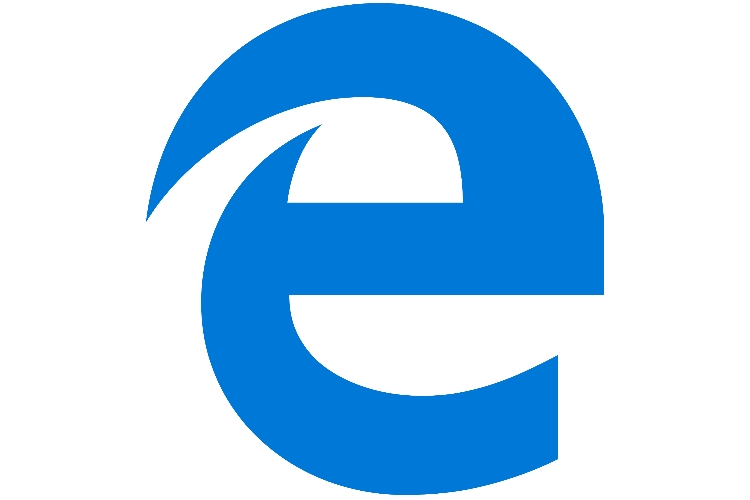

مرورگر چیست؟
مرورگر در واقع نرم افزاری است که شما روی سیستم عامل کامپیوتر، تلفن همراه و … نصب می کنید. با استفاده از مرورگر شما می توانید به تعداد زیادی از وب سایت ها و صفحات وب دسترسی داشته باشید. با استفاده از این پلتفرم شما URL مورد نظر خود را که برای هر وب سایت به صورت اختصاصی معین شده است، وارد نموده و به آن سایت دسترسی پیدا می کنید.
گوگل کروم (Google Chrome)
بیشک، مرورگر کروم محبوبترین مرورگر حال حاضر دنیا است که میلیونها نفر از آن استفاده میکنند. این مرورگر در بررسیهای امسال موفق شد در برخی بنچمارکها با اختلاف درخورتوجهی درمقایسهبا رقبا، صدر جدول را دراختیار بگیرد. کروم بهلطف بهرهمندی از تنوع بالای اکستنشنها، با اقبال عمومی مواجه شده و روزبهروز به کاربران آن افزوده میشود؛ خصوصا از این نظر که گوگل بهتازگی رابط کاربری آن را تغییر داده و شکل جذابی را به آن بخشیده است.
کروم مدتها است که از طراحی سادهی اولیهی خود فاصله گرفته؛ اما همچنان کار با آن بسیار ساده و لذتبخش است. باکس URL بزرگ (با نام اختصاصی OmniBar)، فضایی کوچک برای اکستنشنها، تبها و آیکونی ستارهای برای بوکمارککردن صفحهها، رابط کاربری کروم را تشکیل میدهند؛ رابطی کاربری که درعین سادهبودن ظاهری مدرن دارد.
مرورگر کروم عمیقا با سرویسهای مختلف گوگل یکپارچهسازی شده است. بهعلاوه، کاربر میتواند بوکمارکها، رمزهای عبور، تبهای باز و موارد اینچنینی را بهسادگی در بین دستگاههای مختلف همگامسازی کند. این مرورگر مدرن درکنار ویژگیهای یادشده، از چندین حساب کاربری هم پشتیبانی میکند تا هریک از اعضای خانواده بتوانند بهسادگی با حساب کاربری خودشان و ازطریق مرورگر در فضای وب جستوجو کنند.
گوگل کروم PDFخوان داخلی نیز دارد و شما را از دیگر اپلیکیشنهای مشابه بینیاز میکند. درضمن کسانی که زیاد با گوگل ترنسلیت کار میکنند، میتوانند بهسادگی اکستنشن مختص به آن را از فروشگاه کروم نصب کنند تا دیگر لازم نباشد هربار وارد آدرس translate.Google.com بشوند.
تقریبا تنها نکتهی منفی گوگل کروم که اتفاقا خیلیها را شاکی کرده، این است که فضای زیادی از رم را اشغال میکند. بررسیهای سال گذشته هم نشان داد این مرورگر همچون هیولا فضای رم را میبلعد؛ اما گوگل سعی کرده پس از هر بهروزرسانی، مرورگرش را از این نظر بهینهتر کند.
موزیلا فایرفاکس (Mozilla Firefox)
برای آندسته از کاربرانی که عاشق اکستنشنهای فراوان هستند و تمایل دارند از مرورگری امنتر درمقایسهبا گوگل کروم استفاده کنند، مرورگر متنباز موزیلا فایرفاکس شاید بهترین انتخاب ممکن باشد. فایرفاکس مسیر را برای دیگر مرورگرها بهمنظور توسعهپذیرشدن هموار کرد. شایان ذکر است تنوع اکستنشنهای فایرفاکس هماکنون به گوگل کروم نمیرسد؛ اما رویکردی که موزیلا پیش گرفته میتواند نوید این را بدهد که روزی فایرفاکس بتواند از این حیث بر کروم غلبه کند.
فایرفاکس نیز از ویژگی همگامسازی بین دستگاههای مختلف پشتیبانی میکند و بهلطف ارائهی وبگردی روان میتواند تجربهی جذابی به کاربر بدهد. کاربر میتواند تبهای باز، تبهای اخیر، تاریخچهی جستوجو و حتی بوکمارکهای خود را در بین دستگاههایش همگامسازی کند.
سال گذشته بود که موزیلا طراحی مرورگرش را با انتشار فایرفاکس کوانتوم بهروز کرد. نتایج بررسیهای سال گذشته نشان داد این مرورگر درمقایسهبا نسخههای قبلیاش پیشرفت چشمگیری در همهی زمینهها داشته؛ اما هنوز برای غلبه بر کروم جای کار دارد. بااینحال، پیشبینی میشود که این مرورگر بتواند سرانجام موزیلا را به روزهای اوجش برگرداند.
یکی از برتریهای مهم فایرفاکس درمقایسهبا رقبایش در چند سال اخیر، بیشک به قابلیت جستوجوی ناشناس (Incognito Mode) برمیگردد. تمامی مرورگرهای دیگر نیز از قابلیتی مشابه بهرهمند هستند و وعدهی وبگردی کاملا ناشناس را میدهند؛ اما بررسیها نشان میدهد در اکثر مواقع، وبسایتهای میزبان میتوانند فعالیت کاربر را در حالت ناشناس نیز پایش کنند. این درحالی است که موزیلا با قراردادن مسدودکنندهی تبلیغات و مسدودکنندههای ردیابها در مرورگرش، عملا این کار را برای وبسایت محال کرده است.
اپرا (Opera)
تا قبل از رویکارآمدن کروم، مرورگر اپرا یکی از بهترین انتخابهای ممکن برای وبگردی روزانه بود. مدیرعامل پیشین اپرا که هماکنون روی مرورگر Vivaldi کار میکند، در پی آن است مجددا چنین هدفی را برای خود محقق کند. امروزه، اپرا دیگر محبوبیت پیشین را ندارد و قافیه را تا حد زیادی به رقبایش باخته است.
اپرا مبتنی بر همان موتور اصلی مرورگر کروم است و این، یعنی میتواند بسیاری از اکستنشنهای این مرورگر را اجرا کند. گفتنی است اکستنشنی ویژه برای این مرورگر تولید شده که امکان نصب اکستنشن را از فروشگاه کروم ارائه میدهد.
این مرورگر به برخی ویژگیهای غیرمعمول نظیر Turbo مجهز شده که با فشردهسازی صفحات وب در سرورهای اپرا، سرعت بارگذاری و پهنای باند را بهبود میبخشد. اپرا ویژگی امنیتی جالبی به نام «برجستهسازی دامنه» دارد که قسمت بزرگی از دامنه را مخفی میکند تا کاربر بتواند بهسادگی بفهمد در آن لحظه، در چه سایتی قرار دارد.
اپرا همچنین از نوار کناری کاربردی بهرهمند است که گزینههای مختلفی در آن گنجانده شده و کاربر میتواند بهسادگی به آنها دسترسی پیدا کند. در این نوار کناری، سرویسهایی نظیر واتساپ و فیسبوک مسنجر و تلگرام دردسترس هستند. اپرا نیز همچون کروم و فایرفاکس از قابلیت همگامسازی بین دستگاههای مختلف پشتیبانی میکند.

مایکروسافت اج (Microsoft Edge)
اج مرورگری نوپا بهشمار میآید که مایکروسافت با تبلیغات بسیار، آن را برای ویندوز جدید خود منتشر کرد. این مرورگر هنوز جای کار دارد؛ اما میتواند عملکرد واقعا خوبی از خود بهجای بگذارد. تعداد اکستنشنهای اج بهمرور درحالرشد است؛ اما هماکنون تنوع بسیار کمی در این زمینه دیده میشود.
ویژگی همگامسازی اج فقط به سایتهای محبوب و فهرست مطالعه محدود میشود و برخلاف دیگر مرورگرها، با آن سرعت و نظمی که انتظارش را داریم، بهروزرسانی جدید دریافت نمیکند. تمامی اینها دستبهدست هم دادهاند تا نتوانیم جدیدترین جاهطلبی مایکروسافت را در بازار مرورگرها، مرورگری عالی بهشمار بیاوریم. حتی اخیرا شایعاتی در فضای مجازی منتشر شده که مایکروسافت قصد دارد این مرورگر را کنار بگذارد.
موتور جستجوگر چیست؟
موتور جستجوگر نیز مانند یک نرم افزار است که بر خلاف موتور جستجوگر بر روی سیستم عامل شما نصب نمی شود بلکه روی اینترنت نصب می شود. بر اساس کلمه کلیدی که وارد آن شده است، تعدادی نتیجه را به شما نشان می دهد. برای انجام این کار موتور جسنجوگر وظیفه دارد تا دقیقا کلمه وارد شده را با فایل های متنوعی که در اینترنت وجود دارند تطابق دهد و سپس تعدای را پیشنهاد دهد.
انواع موتور جستجوگر کدام هستند؟
- گوگل (Google)
- یاهو (Yahoo)
- بینگ (Bing)
- Naver
- NATE
- DuckDuckGo